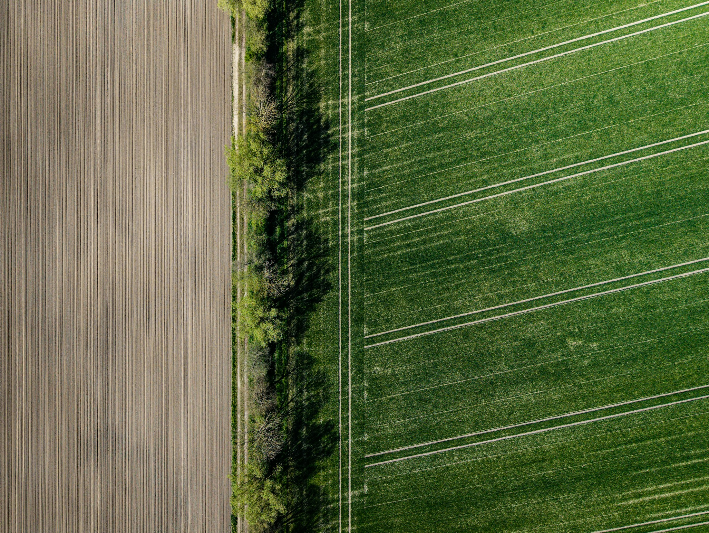
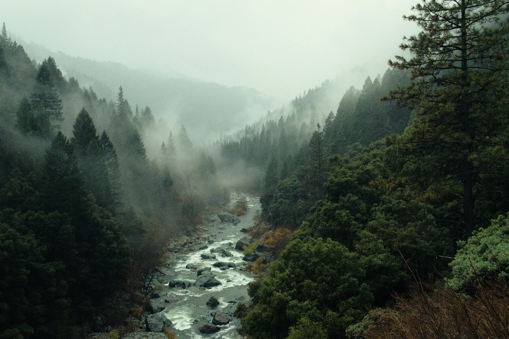

BRING YOUR OWN RESULTS
Import field data
Load Polygon or MultiPolygon GeoJSON boundaries, or your team's prediction JSON. BARC reference labels stay separate from model predictions. Files stay in your browser.
Up to 2 MB · Download a sample file
A FRESH PERSPECTIVE ON YOUR LAND
Find a field. Follow the season. Understand the harvest.

INTELLIGENCE, ROOTED IN YOUR LAND
Your field has a story. Let AI help you read it.
Explore harvest patterns, seasonal change and the evidence behind every answer.
Real observations. Trained classification. Nemotron explanations.
PUBLIC GEOSPATIAL DATASTART WITH YOUR LAND
THE ANSWER IS ONLY THE BEGINNING
Your analysis will bring together a harvest classification, the evidence behind it and what still needs a closer look.

THE LAND IS COMPLEX. YOUR TOOLS SHOULDN'T BE.Photo: pine watt / Unsplash · landscape inspirationA LITTLE MORE CONTEXT. A LOT MORE CLARITY.
Harvest signals do not exist in isolation. Weather, vegetation and field management all shape what we see from above.
Select a field on the map or draw the boundary of your own.
Bring your team's geospatial analysis into one understandable view.
Review uncertainty, add observations and verify before deciding.
Wheanut combines a trained harvest classifier with NVIDIA Nemotron. BARC reports use real historical Sentinel-2 data and pre-generated AI explanations. Photographs are illustrative landscapes. New fields require a live backend. Classification is not harvest-timing advice.
Real BARC field boundaries, 2021–2023. Colors show held-out model predictions, not reference labels.
SMALL STEPS. A CLEARER PICTURE.
Choose a research field, enter coordinates, or draw a boundary.
Look at how green the crop was before and after harvest.
Review the result and flag anything that needs a second look.
Loading measured evaluation…
BRING YOUR OWN RESULTS
Load Polygon or MultiPolygon GeoJSON boundaries, or your team's prediction JSON. BARC reference labels stay separate from model predictions. Files stay in your browser.
Up to 2 MB · Download a sample file
KEEP A COPY
Download field results and your review notes, or share boundaries with your teammate.
Reviews and saved fields are stored on this device.
YOUR FIELD ASSISTANT
A trained harvest classifier uses seasonal Sentinel-2 observations. NVIDIA Nemotron explains its results on the team GPU. Reports are pre-generated; new boundaries await a live backend.
44 real field-year reportsABOUT THIS WORKSPACE
44 evaluated field-years from 34 Maryland fields. Predictions are held out by year and field. New fields wait for analysis. Classification does not establish harvest timing.